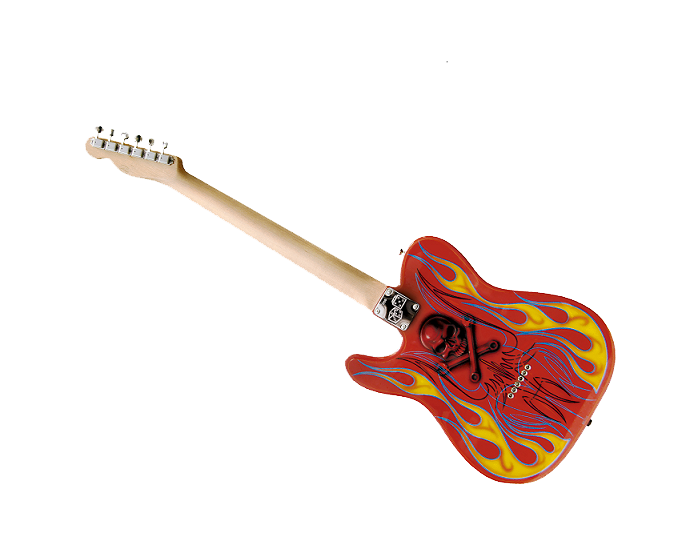
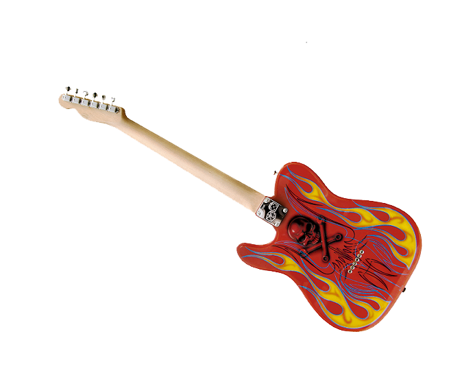

Название
«AC/DC» — аббревиатура от «ток переменный/ток постоянный» (англ. «alternating current/direct current») . Старшая сестра Малколма и Ангуса Янгов, Маргарет предложила название для группы после того, как увидела надпись «AC/DC» на задней стороне швейной машинки (кстати, именно Маргарет предложила Ангусу выступать на сцене в школьной форме).
История создания группы
Братья Ангус (родился 31 марта 1955 года; по требованию компании Atlantic Records годом рождения Ангуса официально указывался неверный 1959), Малколм (родился 6 января 1953 года) и Джордж Янг (George Young) родились в Глазго (Шотландия), но в 1963 году вместе с большей частью семьи уехали в Сидней. Джордж начал играть на гитаре первым и стал членом самой успешной австралийской группы 1960-х, The Easybeats. Это была первая местная рок-группа, которая выпустила хит международного масштаба — «Friday on My Mind» в 1966 году. Малколм вскоре последовал по стопам брата, став гитаристом группы из Ньюкасла The Velvet Underground (не следует путать с нью-йоркским коллективом The Velvet Underground).